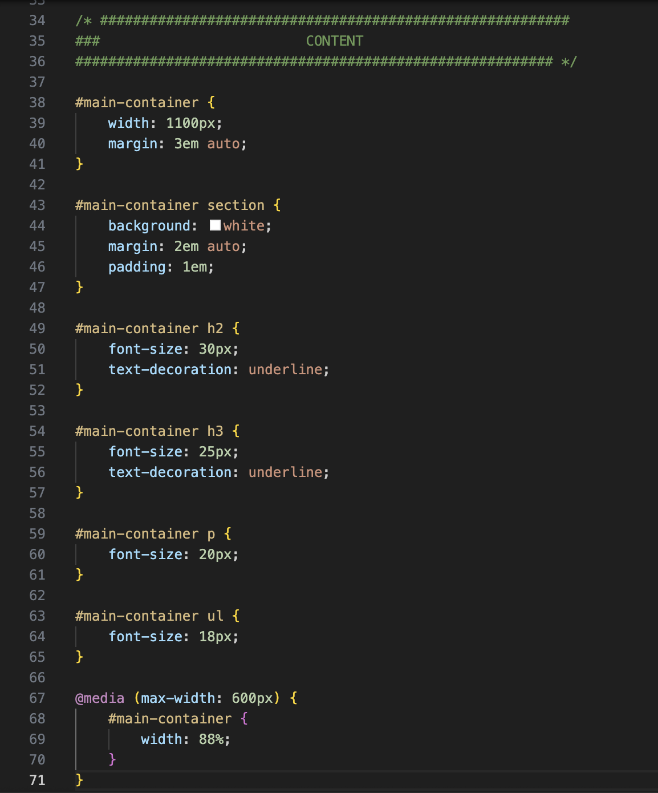

1er semaine de stage:
• La banque:
La banque où j'ai effectué mon stage ( du 17/06 au 20/06) est le Crédit Mutuel. C'est une banque mutualiste qui propose des services financiers aux particuliers et aux professionnels (comptes bancaires, crédits, épargne, assurances et plein d'autres services). Elle accompagne ses clients tout au long de leur vie pour gérer leurs argents ainsi que leurs comptes tout en proposant des solutions adapées a leurs besoins.
Pendant ce stage, j'ai pu découvrir et observer de nouvelles choses :
- Missions variées (accueil clients, gestion de dossiers, assistance à des conseillers...).
- De nouvelles compétences (gestion administrative, communication professionnelle, utilisation de logiciels bancaires...).
- Ambiance professionnelle (cadre de travail : sérieux, organisé, respectueux...).
- Observation de situations concrètes (entretiens avec des clients, la gestion de demandes spécifiques, la résolution de problèmes...).
- Et plein d'autres encore!
Pendant mon stage, j'ai principalement travaillé à l'accueil, mais j'ai aussi eu la chance de pouvoir assister à quelques rendez-vous avec des particuliers, notamment pour des contrats. J'ai également assisté à des réunions internes évoquant des modifications dans l'organisation, des modifications dans l'utilisation du logiciel.
Cela m’a permis de mieux comprendre les coulisses du travail dans une banque....
Ce que j'ai vu de mon stage est que les gens ont beaucoup de mal et de questions avec leurs comptes, tombent facilement dans le piège des escrocs, mais j'ai pu aussi apprendre à me servir de leurs logiciels de travail, et aussi voir les coulisses du fonctionnement d’une banque (le ramassage de chèques, l'ouverture et la fermeture et plein d'autres).
Ce stage m'a permis d'avoir une vision différente et d'avoir une nouvelle expérience professionnelle pour que je m'oriente le mieux pour mon avenir dans le monde du travail.
2éme semaine de stage
• Développeur:
J'ai effectué mon stage avec un développeur (du 23/06 au 27/06). Il m'a montré les commandes de base du terminal (sur un ordinateur) ainsi que reproduire un début de site web avec vscode (de nouvelles commandes...), et j'ai pu concevoir mon rapport de stage.
Ce stage m'a donné une perspective encore plus différente sur le monde du travail et m'a permis d'acquérir une nouvelle expérience professionnelle, dans le but de mieux me préparer pour mon avenir.
1. Manipuler le terminal
J'ai pu apprendre à manipuler mon terminal, c'est-à-dire :
- Apprendre à me situer et à me déplacer dans mes dossiers depuis celui-ci.
- J'ai créé un dossier pour pouvoir développer et mettre mes travaux dedans.
- J'ai déplacé des fichiers et créé de nouveaux.
- Et d'autres... (voir avec le lien).
2. Manipuler un outil de dévelopement
J'ai également pu apprendre à me servir de l'HTML et du CSS, le HTML est un langage pour développer une page web et le CSS est l'outil pour modifier et améliorer le visuel de celle-ci.
Voici un exemple d'HTML pour réaliser ce rapport de stage :

Voici un exemple de CSS :
3. Placer les éléments sur une page web:
À l'aide d'un site nommé FLEXBOX FROGGY, j'ai appris comment placer des éléments sur une page web grâce aux "flexbox". Sur l'exemple ci dessous, nous devons placer les grenouilles en fonction des consignes.
4. Documentation:
• Avec un site nommé W3school, j'ai pu faire mes recherches sur comment utiliser les différentes commandes et celles appropriées à ce que je souhaitais (HTML/CSS/Javascript).
• En utilisant un site appelé MDN, il est possible d'accéder à toute la documentation nécessaire pour apprendre à programmer des sites web (HTML/CSS/JavaScript...).
5. Le Javascript
Le javascript est un langage de programmation qu’on utilise dans les sites web pour les rendre interactifs/animés.
Exemples ci-dessous d'un générateur d'images de chats aléatoires et de petites fun facts sur les chats.
Chatnecdote :
Loading ....